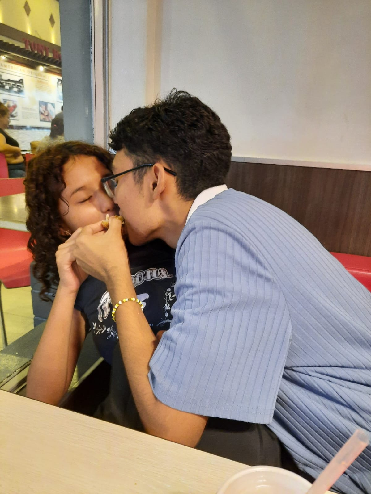
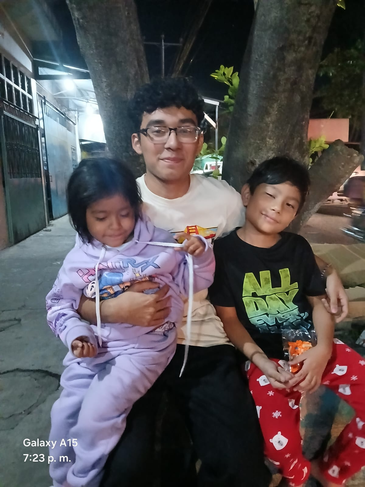

Extraño platicar contigo, extraño tus chistes de Apopa, que me cuentes de cosas insignificantes, que me sonrías y hagas vocecitas pequeñas; extraño la manera en que mi cabeza replicaba tu voz dentro de mí para leer lo que me decías; me hacen falta tus ojos, tus cabellos y rulos, tu piel suave canela, como el cobre, el cobre que condujo electricidad dentro de mí; tu olor dulce que a veces aún percibo y volteo con miedo e incredulidad pensando que eres tú.
Odio verte de lejos, odio verte sentada al otro lado porque realmente quisiera que estuvieras sentada conmigo, que me piques las costillas y me hagas dibujos en los cuadernos, y no verte, no verte ahí en silencio, silencio que alguna vez habitamos como las hiedras entre las rosas.
Quisiera volver a verte por un microinstante, cerrar los ojos antes de un beso, jugar con tu pelo y que me veas a los ojos con la ternura que alguna vez me tuviste...
Extraño todo eso, cada parte de eso, cada parte de ti, de tu carne, de tu pecho y de tu corazón.
Coordinar una salida o un bus solamente para vernos un rato más... acompañarte a tu casa o irme hasta tarde sin importar los regaños que realmente ya no eran castigos si estabas conmigo... vivir en tus faenas, reírme y escaparme contigo, con tal de verte una hora más o quizás menos.
Pero he sido cruel, he sido malo, he dañado y dejé de ser aquel que alguna vez creíste que fui; a medida que pasó el tiempo nos fuimos mutuamente quebrando y pido perdón por no quedarme en esos instantes a tu lado, por no acompañarte cuando más me necesitabas y ser estúpido cuando no estaba; te pido perdón por haberte causado dolor, preocupación, sufrimiento, ser alguien cruel con tu corazón; debí haberlo cuidado más, pero de lo que sí más mi piel carcome es no cumplir con todas esas promesas que nos hicimos; me hubiera gustado ir a un concierto contigo, si te soy totalmente sincero... verte a ti y a Gian existiendo y que no se quedasen como un vil pensamiento, que no puedo borrar tus fotos porque siempre vuelvo a buscarlas y verlas.
Vuelvo a verte de reojo deseando que te voltees y, aunque sea una mueca tuya, volver a ver; que te escondas en mi cuello y roces con tu suave cabello y me mires con tus ojitos cafés, que me mires como una niña mira una flor bonita, que me abraces como si fuera a desaparecer, que me des tu amor y tú me dejes darte todo el mío.
A veces camino por las calles donde te mandaba mensajitos, o miro el lugar de donde sale el sol todas las mañanas, el cual convenientemente es donde me dirijo para ir a tu casa... hubiera amado conocer aún más a tus hermanos, que me recordaran como los recuerdo a ellos... pero tú y yo ahora ya no somos los mismos.
Hubiera querido tenerte en mis perfiles, tener una foto tuya en mi perfil, colocarte como mi mayor tesoro que tenía, pero el dolor que causaste en mí me nublaba todo lo bueno que tenías... ahora que mis ojos son distintos, quisiera que fueras mi novia, que todos lo supieran y ser esa parejita latosa de la que todos se quejan... o esos enamoraditos que nunca se despegan... pero, ¿cómo hacerle ver a aquel yo de ese entonces lo que yo veo ahora en el presente?... ¿cómo podría volver a ser quien habite tu corazón...?
Sangré por ti, lloré y sufrí, pero me hace sufrir más que no estés conmigo, porque mato drogas con otras drogas para tan solo un minuto no hagas presencia en mis viles confines...
Quédate, déjame ser aquel que juré te amaría.
Quédate y déjate ser aquella que siempre me amaría.
¿Podríamos hacer las cosas bien una sola vez? Y trascender en el tiempo como debimos.
Después de todo, tú me conoces tanto como yo mismo, ¿para qué alejarte si eres el polo opuesto de mi mundo?
¿Cómo podría dejarte como si nada? No puedo, no quiero, no lo deseo, porque no hay nadie como tú, no hay nadie que tenga la potestad de decir todo lo que hemos vivido juntos con tanta seguridad como tú... porque si algo puedo asegurar es que eres un pensamiento que vivirá hasta el fin de mis días, porque eres más que recuerdo, porque somos y fuimos del otro en todas las formas...
No sé por qué escribo esto, pero aun así no me arrepiento, porque son tus manos las únicas que me pueden acariciar; lee esto, quémalo, mójalo, rómpelo, ignóralo, pero aun así quizás muy en el fondo hago esto es... es porque aún te amo.
Te amo y te amo Katherine Valeria De Leon Serpas.
Atentamente: Aaron Marcelo Escobar Azucena


